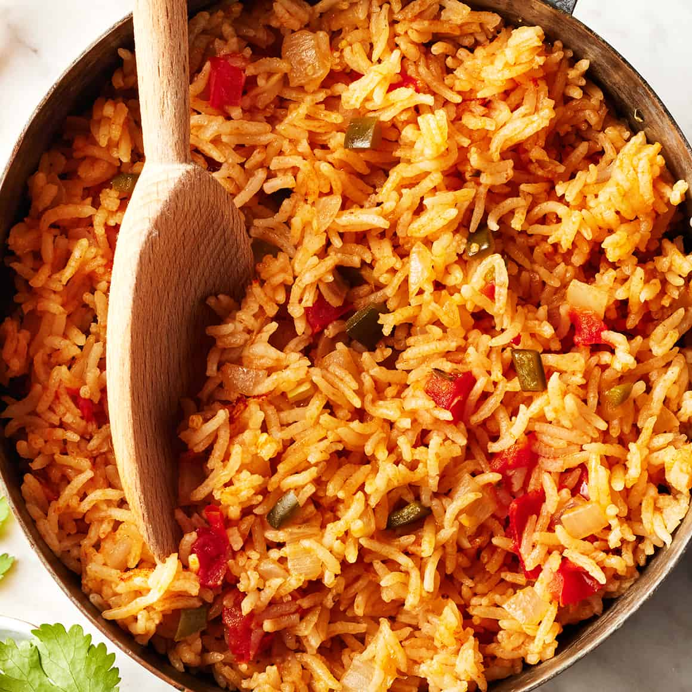

Spanish Rice

Description
Ingredients
- Rice
- Onion and Garlic
- Extra-virgin olive oil
- Tomato paste
- Diced tomatoes
- Jalapeno pepper
- Dried oregano
- Vegetable broth
- Sea salt
Steps
-
First, rinse the rice. This is my first step whenever I’m cooking rice,
as it removes starches that can cause the rice to clump. Place it in a fine
mesh strainer set over a bowl, and rinse it under cool running water until
the water in the bowl runs clear.
-
Next, sauté the onion and toast the rice. Heat the olive oil in a medium
pot or Dutch oven over medium heat. Add the onion and cook until it’s soft
and translucent, about 5 minutes.
-
Add the rice and cook, stirring often, for another 2 minutes, until it’s fragrant.
-
Then, add the remaining ingredients. Stir in the tomato paste and garlic,
followed by the diced tomatoes or tomato sauce, jalapeño, salt, and oregano.
-
Pour in the broth, and bring it to a boil.
-
Reduce the heat, cover the pot, and simmer the rice for 15 minutes, or until
the rice is tender and the liquid is absorbed.
-
Finally, let the rice steam. Remove it from the heat and let it sit, covered, for 10 minutes.
Source
Recipe obtained from here